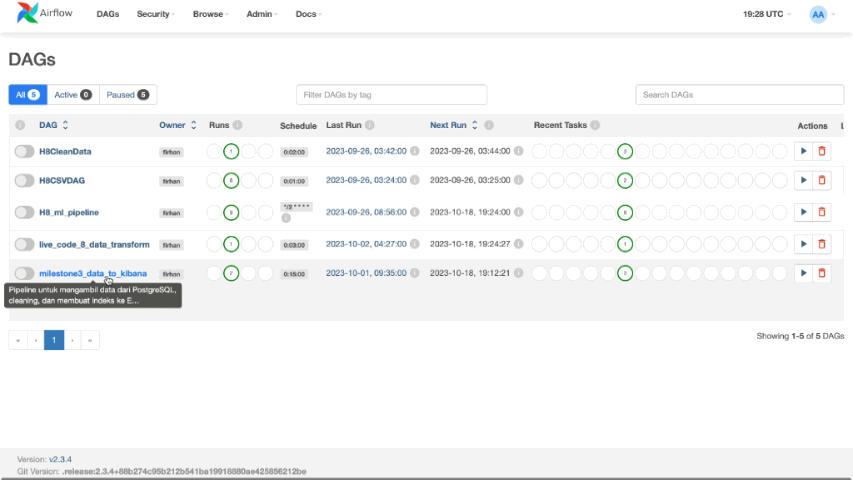
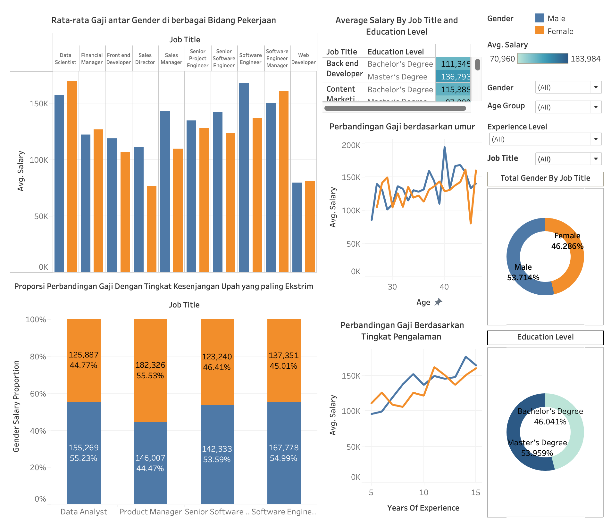

Perform a comparative analysis of machine learning algorithms using a telecommunications dataset from Kaggle to predict customer churn. Evaluated five distinct algorithms, optimizing them with cross-validation during hyperparameter tuning. The XGBoost model, fine-tuned with RandomSearchCV boasting the highest recall for the 'Churn' class—identifying 79% of potential churns. Following evaluation, the model was deployed with Streamlit, enabling web-based user data input and predictions on the Hugging Face platform.

Developed and automated a data processing pipeline using Apache Airflow, configured within a Docker environment, for the Telco Customer Churn dataset from Kaggle. This pipeline streamlined data extraction from a PostgreSQL database, performed essential cleaning, and integrated the data into Elasticsearch for enhanced data exploration and visualization with Kibana.

Performed an exploratory data analysis (EDA) on a Kaggle dataset to investigate the gender wage gap, focusing on factors like age, job position, education, and work experience. Utilized Tableau for visual representation and conducted a correlation analysis which revealed a disparity in wage progression between male and female employees

Designed and developed a comprehensive data visualization dashboard focused on analyzing the "Churn Rate" for a telecommunications dataset sourced from Kaggle. Leveraged Python to extract and cleanse the data from a PostgreSQL database using Pandas, subsequently indexing it into Elasticsearch. The resulting Kibana dashboard centralizes key metrics, empowering the telecommunications company with actionable insights to reduce churn, identify improvement areas, and boost customer loyalty through data-driven decisions.
Conducted an Exploratory Data Analysis on a dataset obtained from web scraping property websites, focusing on factors affecting house selling prices in Jakarta. Incorporated geospatial data analysis in analyzing regional price disparities, the study concluded that houses closer to the center of Jakarta are generally more expensive. Additionally, the study revealed that land and building area have a more pronounced effect on pricing compared to the number of bedrooms or bathrooms. This analysis provides valuable insights into the property market trends in Jakarta.